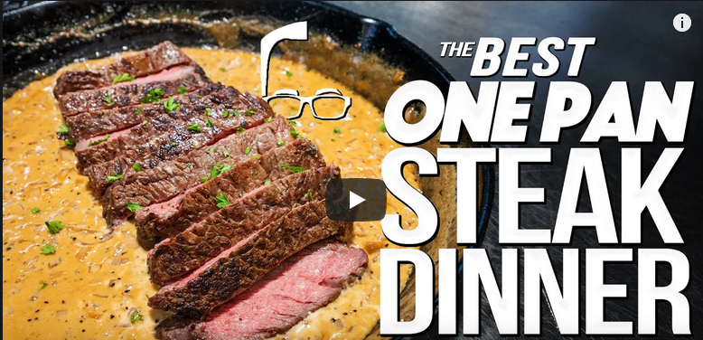

Honey Mustard Steaks

Source
This one is a speacial honey Mustard steak
Ingredients
- Four 6-8 ounce boneless steaks (I like a Ribeye)
- Neutral oil, like avocado oil
- Kosher salt and fresh ground pepper
- 1 tablespoon each mayo, honey & Dijon mustard
- 1/2 teaspoon apple cider vinegar
- 1 small onion, chopped fine
- 1 clove garlic, minced
- 1/3 cup dry vermouth
- 1/2 cup heavy cream
- 1 tablespoon Worcestershire sauce
- Chopped parsley for garnish
Directions
- Lightly oil the steaks, and season well with Kosher salt & pepper
- Heat skillet to medium and cook steaks, turning often until approximately 128-130 degrees for medium rare, or longer if you like it cooked s little more
- While the steaks cook, combine mayo, honey, mustard and vinegar - mix well and set aside
- Place steaks on plate and cover with foil to keep warm
- Turn the heat down slightly, add about a tablespoon more oil then put in the onions
- Cook a couple minutes until just beginning to soften, then add the garlic
- When garlic becomes very fragrant, about 45 seconds, and if doing this on a stove, remove from heat & add the vermouth, being careful cuz it could flame - then return to the stove
- Cook until most of the vermouth has evaporated, then add cream, honey mustard, Worcestershire and a good pinch of salt & pepper - stir well to mix and let come to a simmer until slightly thickened
- I like to slice the steaks and spoon the sauce over the top